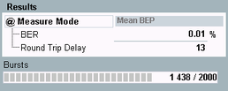

"Mean BEP" mode is possible, if enhanced measurement report is switched on. In "Mean BEP" mode, the R&S CMW transmits a full channel coded downlink DL signal. This mode allows the MS to calculate enhanced measurement reports.
Loop mode C is used. The internal test loop of the MS is closed before any channel decoding/encoding. The BER is evaluated on a burst by burst basis.
The calculation of the BER result is done in the same way as in "Mode Burst by Burst". Additional intermediate results at the remote interface are available while the measurement is running, see
For background information, see "Test Loops" and "Frame Structure for BER CS Tests".

- BER: Bit error rate, average bit error probability (BEP) of the bursts, averaged over all bursts within the MS reporting period.
- Round-trip delay: duration in bursts the loopback signal needs from a transmission to detection by the R&S CMW.
- Bursts: number of already evaluated bursts and total number of bursts to be evaluated.